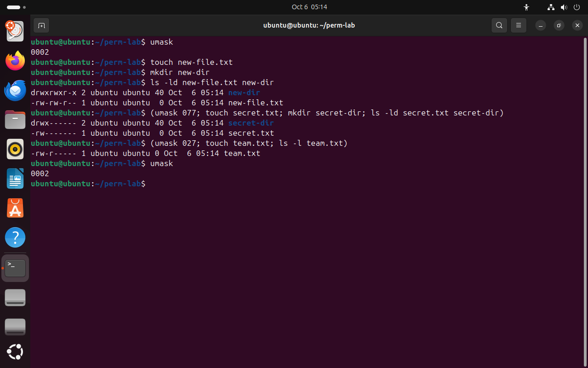

Часть 5 из 7
Права новых файлов: umask
В этой части разберём, откуда берутся права только что созданного файла или каталога, как их задаёт umask и почему в Ubuntu новые файлы открыты для записи группе.
5.1 Маска прав
Файл, созданный командой touch, получил права rw-rw-r--, а каталог от mkdir — rwxrwxr-x. Эти права никто не задавал явно. Программа, создающая файл, запрашивает у ядра «максимальные» права: 666 для файла и 777 для каталога. Ядро убирает из них биты, перечисленные в маске процесса, — umask.
Маска работает как трафарет поверх листа: всё, что закрыто трафаретом, на лист не попадёт. Бит, который есть в маске, у нового файла будет снят. Обычный файл не получает x никогда, потому что программы запрашивают для файлов 666, — права на выполнение добавляют отдельно, командой chmod.
| umask | новый файл (из 666) | новый каталог (из 777) | Где встречается |
|---|---|---|---|
0002 | 664 · rw-rw-r-- | 775 · rwxrwxr-x | Ubuntu, обычный пользователь: группа может писать |
0022 | 644 · rw-r--r-- | 755 · rwxr-xr-x | root и многие серверы: писать может только владелец |
0027 | 640 · rw-r----- | 750 · rwxr-x--- | серверы с закрытыми данными: остальным ничего |
0077 | 600 · rw------- | 700 · rwx------ | всё только для владельца |
Маска снимает отдельные биты. Для типичных масок результат совпадает с вычитанием, но не всегда: при umask 0033 файл получит 644, а вычитание 666 − 033 дало бы 633. Правильный способ — по тройкам: из rw- маска -wx убирает w и x, остаётся r--.
В Ubuntu у каждого пользователя есть личная группа с его именем, в которой больше никого нет. Поэтому маска 0002 безопасна: запись для группы ubuntu никому, кроме самого ubuntu, не даёт. В общем каталоге с битом setgid новые файлы получают группу проекта, и маска 0002 открывает их для записи всей команде — так работал каталог /srv/devteam на прошлом занятии.
5.2 Своя маска
Команда umask без аргументов выводит текущую маску, с аргументом — устанавливает новую для текущей оболочки и всех программ, запущенных из неё. Изменение действует до закрытия терминала; чтобы оно сохранялось, строку umask 027 дописывают в ~/.bashrc.
Если маска нужна для одной операции, команды берут в круглые скобки. Скобки запускают отдельную копию оболочки — подоболочку: umask внутри неё меняет маску только для неё, а основная оболочка остаётся с прежней маской.
umask# текущая маскачто делает
Что делает команда. Выводит текущую маску прав новых файлов.
По частям:
umask- встроенная команда оболочки: вывести или задать маску прав новых файлов
touch new-file.txtчто делает
Что делает команда. Создаёт пустой файл; его права определит маска.
По частям:
touch- создать пустой файл
new-file.txt- какой файл (путь относительно текущего каталога)
mkdir new-dirчто делает
Что делает команда. Создаёт каталог; его права определит маска.
По частям:
mkdir- создать каталог
new-dir- какой каталог создать
ls -ld new-file.txt new-dir# права из 666 и 777 без маскичто делает
Что делает команда. Выводит права нового файла и самого нового каталога.
По частям:
ls- вывести содержимое каталога
-l- подробный список: права, владелец, группа, размер
-d- показать сам каталог, а не его содержимое
new-file.txt- что показать (путь относительно текущего каталога)
new-dir- что показать
(umask 077; touch secret.txt; mkdir secret-dir; ls -ld secret.txt secret-dir)# маска только внутри скобокчто делает
Что делает команда. В подоболочке ставит маску 077, создаёт файл и каталог и показывает их права; маска основной оболочки не меняется.
По частям:
( … )- выполнить команды в подоболочке: отдельной копии bash; изменения маски не выйдут за скобки
umask 077- маска 077: снимать у новых файлов все права группы и остальных
touch secret.txt- создать файл: 666 без битов маски = 600
mkdir secret-dir- создать каталог: 777 без битов маски = 700
ls -ld secret.txt secret-dir- показать права обоих, каталог — сам, а не содержимое
;- разделитель: выполнить следующую команду после предыдущей
(umask 027; touch team.txt; ls -l team.txt)что делает
Что делает команда. В подоболочке ставит маску 027, создаёт файл и показывает его права.
По частям:
( … )- выполнить команды в подоболочке
umask 027- маска 027: у группы снимать w, у остальных всё
touch team.txt- создать файл: 666 без битов маски = 640
ls -l team.txt- показать права нового файла
umask# маска оболочки не измениласьчто делает
Что делает команда. Выводит текущую маску прав новых файлов.
По частям:
umask- встроенная команда оболочки: вывести или задать маску прав новых файлов
- 1маска оболочки 0002
- 2777 и 666 без бита 2: rwxrwxr-x и rw-rw-r--
- 3маска 077: всё только владельцу
- 4маска 027: группа читает, остальным ничего
- 5после скобок маска прежняя


Весь снимок ↗Права новых файлов при масках 0002, 077 и 027.
Что показывает снимок. При маске 0002 новый файл получил rw-rw-r--, каталог — rwxrwxr-x; маски 077 и 027 действовали только внутри скобок, маска оболочки осталась 0002.
Где это пригодится. На сервере маску 027 ставят службам и администраторам, чтобы новые журналы и выгрузки не открывались всем пользователям системы.
На схеме ниже можно ввести маску и увидеть права нового файла и нового каталога с разбором по битам.
Итоги части 5
- Новый файл получает права 666, новый каталог — 777, из которых снимаются биты umask.
- В Ubuntu маска 0002: файлы
rw-rw-r--, каталогиrwxrwxr-x; на серверах часто 0022 или 0027. - Маска снимает биты: считать нужно по тройкам, вычитание чисел иногда даёт неверный результат.
umask 027меняет маску оболочки до закрытия терминала; в скобках — только для команд внутри скобок.
В отчётСнимок с тремя масками и расчёт прав файла и каталога для маски 0027 по тройкам.